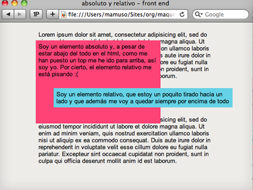

absoluto y relativo
Echémosle un vistazo a este ejemplo.
El elemento relativo (el parrafito azul) tiene un z-index de 3 que hace que se quede por encima del elemento absoluto (el rosa) que tiene un z-index de 1.
El elemento absoluto tiene como origen de coordenadas la esquina superior izquierda de la página. Como sólo hemos definido la propiedad top a 0 nos sitúa el elemento en la parte superior de la página pero no lo desplaza lateralmente.